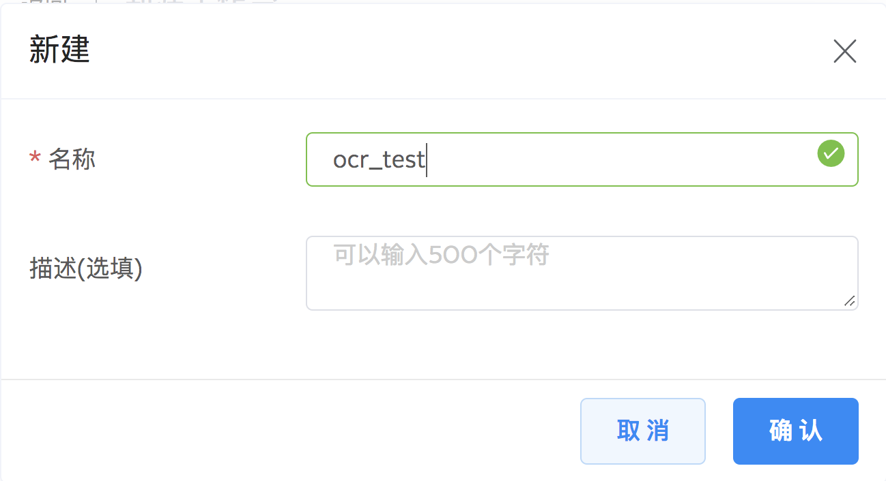
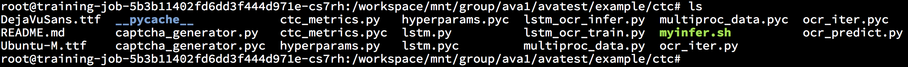
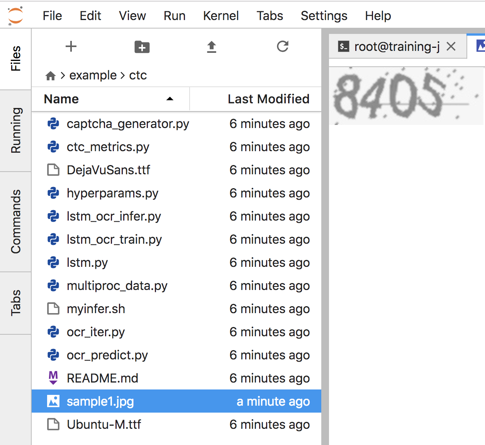
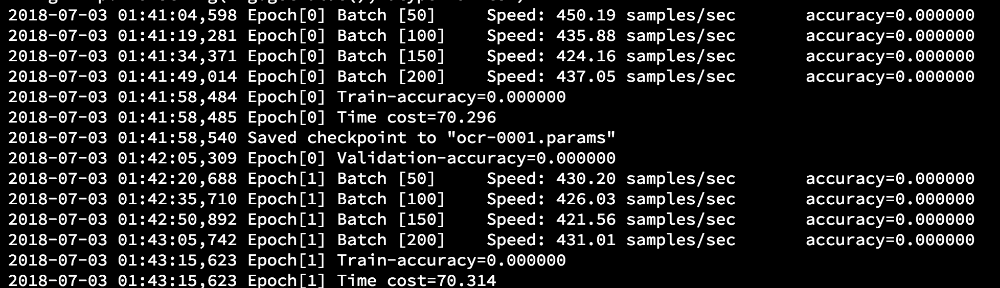
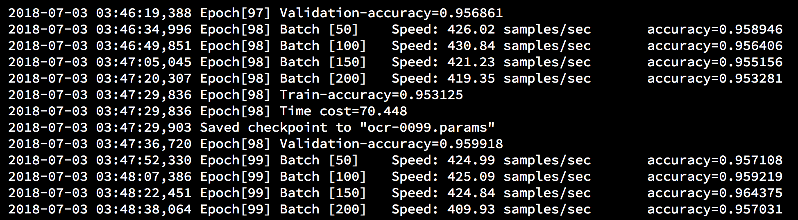

<!DOCTYPE HTML>
<html lang="" >
    <head>
        <meta charset="UTF-8">
        <meta content="text/html; charset=utf-8" http-equiv="Content-Type">
        <title>7 Tutorial: 训练 OCR 模型 · GitBook</title>
        <meta http-equiv="X-UA-Compatible" content="IE=edge" />
        <meta name="description" content="">
        <meta name="generator" content="GitBook 3.2.3">
        
        
        
    
    <link rel="stylesheet" href="../gitbook/style.css">

    
            
                
                <link rel="stylesheet" href="../gitbook/gitbook-plugin-search-plus/search.css">
                
            
                
                <link rel="stylesheet" href="../gitbook/gitbook-plugin-alerts/style.css">
                
            
                
                <link rel="stylesheet" href="../gitbook/gitbook-plugin-anchors/plugin.css">
                
            
                
                <link rel="stylesheet" href="../gitbook/gitbook-plugin-highlight/website.css">
                
            
                
                <link rel="stylesheet" href="../gitbook/gitbook-plugin-fontsettings/website.css">
                
            
        

    

    
        
    
        
    
        
    
        
    
        
    
        
    

        
    
    
    <meta name="HandheldFriendly" content="true"/>
    <meta name="viewport" content="width=device-width, initial-scale=1, user-scalable=no">
    <meta name="apple-mobile-web-app-capable" content="yes">
    <meta name="apple-mobile-web-app-status-bar-style" content="black">
    <link rel="apple-touch-icon-precomposed" sizes="152x152" href="../gitbook/images/apple-touch-icon-precomposed-152.png">
    <link rel="shortcut icon" href="../gitbook/images/favicon.ico" type="image/x-icon">

    
    <link rel="next" href="../08-tutorial-SSD/ssd.html" />
    
    
    <link rel="prev" href="../06-tutorial-classification/6.3-start-training.html" />
    

    </head>
    <body>
        
<div class="book">
    <div class="book-summary">
        
            
<div id="book-search-input" role="search">
    <input type="text" placeholder="Type to search" />
</div>

            
                <nav role="navigation">
                


<ul class="summary">
    
    

    

    
        
        
    
        <li class="chapter " data-level="1.1" data-path="../">
            
                <a href="../">
            
                    
                    Introduction
            
                </a>
            

            
        </li>
    
        <li class="chapter " data-level="1.2" data-path="../01-introduction.html">
            
                <a href="../01-introduction.html">
            
                    
                    1 概述
            
                </a>
            

            
        </li>
    
        <li class="chapter " data-level="1.3" data-path="../02-quick-start.html">
            
                <a href="../02-quick-start.html">
            
                    
                    2 Quick Start
            
                </a>
            

            
        </li>
    
        <li class="chapter " data-level="1.4" data-path="../03-concepts/3.0-concepts.html">
            
                <a href="../03-concepts/3.0-concepts.html">
            
                    
                    3 AVA 基础概念
            
                </a>
            

            
            <ul class="articles">
                
    
        <li class="chapter " data-level="1.4.1" data-path="../03-concepts/3.1-dataset.html">
            
                <a href="../03-concepts/3.1-dataset.html">
            
                    
                    3.1 数据集
            
                </a>
            

            
        </li>
    
        <li class="chapter " data-level="1.4.2" data-path="../03-concepts/3.2-shared-storage.html">
            
                <a href="../03-concepts/3.2-shared-storage.html">
            
                    
                    3.2 共享存储
            
                </a>
            

            
        </li>
    
        <li class="chapter " data-level="1.4.3" data-path="../03-concepts/3.3-workspace-and-training.html">
            
                <a href="../03-concepts/3.3-workspace-and-training.html">
            
                    
                    3.3 工作台与训练
            
                </a>
            

            
        </li>
    
        <li class="chapter " data-level="1.4.4" data-path="../03-concepts/3.4-quota.html">
            
                <a href="../03-concepts/3.4-quota.html">
            
                    
                    3.4 Quota
            
                </a>
            

            
        </li>
    
        <li class="chapter " data-level="1.4.5" data-path="../03-concepts/3.5-image.html">
            
                <a href="../03-concepts/3.5-image.html">
            
                    
                    3.5 镜像
            
                </a>
            

            
        </li>
    
        <li class="chapter " data-level="1.4.6" data-path="../03-concepts/3.6-model.html">
            
                <a href="../03-concepts/3.6-model.html">
            
                    
                    3.6 模型
            
                </a>
            

            
        </li>
    
        <li class="chapter " data-level="1.4.7" data-path="../03-concepts/3.7-workflow.html">
            
                <a href="../03-concepts/3.7-workflow.html">
            
                    
                    3.7 工作流
            
                </a>
            

            
        </li>
    

            </ul>
            
        </li>
    
        <li class="chapter " data-level="1.5" data-path="../04-register.html">
            
                <a href="../04-register.html">
            
                    
                    4 AVA 申请注册流程
            
                </a>
            

            
        </li>
    
        <li class="chapter " data-level="1.6" data-path="../05-tasks/5.0-tasks.html">
            
                <a href="../05-tasks/5.0-tasks.html">
            
                    
                    5 AVA 基础教程
            
                </a>
            

            
            <ul class="articles">
                
    
        <li class="chapter " data-level="1.6.1" data-path="../05-tasks/5.1-dataset.html">
            
                <a href="../05-tasks/5.1-dataset.html">
            
                    
                    5.1 数据集管理
            
                </a>
            

            
        </li>
    
        <li class="chapter " data-level="1.6.2" data-path="../05-tasks/5.2-workspace.html">
            
                <a href="../05-tasks/5.2-workspace.html">
            
                    
                    5.2 工作台管理
            
                </a>
            

            
            <ul class="articles">
                
    
        <li class="chapter " data-level="1.6.2.1" data-path="../05-tasks/5.2.1-ssh.html">
            
                <a href="../05-tasks/5.2.1-ssh.html">
            
                    
                    5.2.1 使用 SSH 登录工作台
            
                </a>
            

            
        </li>
    
        <li class="chapter " data-level="1.6.2.2" data-path="../05-tasks/5.2.2-snapshot.html">
            
                <a href="../05-tasks/5.2.2-snapshot.html">
            
                    
                    5.2.2 创建工作台快照
            
                </a>
            

            
        </li>
    
        <li class="chapter " data-level="1.6.2.3" data-path="../05-tasks/5.2.3-monitor.html">
            
                <a href="../05-tasks/5.2.3-monitor.html">
            
                    
                    5.2.3 训练监控管理
            
                </a>
            

            
        </li>
    

            </ul>
            
        </li>
    
        <li class="chapter " data-level="1.6.3" data-path="../05-tasks/5.3-training.html">
            
                <a href="../05-tasks/5.3-training.html">
            
                    
                    5.3 训练管理
            
                </a>
            

            
        </li>
    
        <li class="chapter " data-level="1.6.4" data-path="../05-tasks/5.4-model.html">
            
                <a href="../05-tasks/5.4-model.html">
            
                    
                    5.4 模型管理
            
                </a>
            

            
        </li>
    
        <li class="chapter " data-level="1.6.5" data-path="../05-tasks/5.5-image.html">
            
                <a href="../05-tasks/5.5-image.html">
            
                    
                    5.5 镜像管理
            
                </a>
            

            
        </li>
    

            </ul>
            
        </li>
    
        <li class="chapter " data-level="1.7" data-path="../06-tutorial-classification/6.0-classification.html">
            
                <a href="../06-tutorial-classification/6.0-classification.html">
            
                    
                    6 Tutorial: 训练图像分类模型
            
                </a>
            

            
            <ul class="articles">
                
    
        <li class="chapter " data-level="1.7.1" data-path="../06-tutorial-classification/6.1-dataset-with-jsonlist.html">
            
                <a href="../06-tutorial-classification/6.1-dataset-with-jsonlist.html">
            
                    
                    6.1 准备数据集 (数据集管理方式)
            
                </a>
            

            
        </li>
    
        <li class="chapter " data-level="1.7.2" data-path="../06-tutorial-classification/6.2-dataset-with-sharing.html">
            
                <a href="../06-tutorial-classification/6.2-dataset-with-sharing.html">
            
                    
                    6.2 准备数据集 (组/Bucket 共享方式)
            
                </a>
            

            
        </li>
    
        <li class="chapter " data-level="1.7.3" data-path="../06-tutorial-classification/6.3-start-training.html">
            
                <a href="../06-tutorial-classification/6.3-start-training.html">
            
                    
                    6.3 开始训练
            
                </a>
            

            
        </li>
    

            </ul>
            
        </li>
    
        <li class="chapter active" data-level="1.8" data-path="ocr.html">
            
                <a href="ocr.html">
            
                    
                    7 Tutorial: 训练 OCR 模型
            
                </a>
            

            
        </li>
    
        <li class="chapter " data-level="1.9" data-path="../08-tutorial-SSD/ssd.html">
            
                <a href="../08-tutorial-SSD/ssd.html">
            
                    
                    8 Tutorial: 训练 SSD 模型
            
                </a>
            

            
        </li>
    
        <li class="chapter " data-level="1.10" data-path="../09-faq/faq.html">
            
                <a href="../09-faq/faq.html">
            
                    
                    9 FAQ
            
                </a>
            

            
        </li>
    

    

    <li class="divider"></li>

    <li>
        <a href="https://www.gitbook.com" target="blank" class="gitbook-link">
            Published with GitBook
        </a>
    </li>
</ul>


                </nav>
            
        
    </div>

    <div class="book-body">
        
            <div class="body-inner">
                
                    

<div class="book-header" role="navigation">
    

    <!-- Title -->
    <h1>
        <i class="fa fa-circle-o-notch fa-spin"></i>
        <a href=".." >7 Tutorial: 训练 OCR 模型</a>
    </h1>
</div>


                    <div class="page-wrapper" tabindex="-1" role="main">
                        <div class="page-inner">
                            
<div class="search-plus" id="book-search-results">
    <div class="search-noresults">
    
                                <section class="normal markdown-section">
                                
                                <h1 id="&#x8BAD;&#x7EC3;&#x4E00;&#x4E2A;-ocr-&#x6A21;&#x578B;"><a name="&#x8BAD;&#x7EC3;&#x4E00;&#x4E2A;-ocr-&#x6A21;&#x578B;" class="plugin-anchor" href="#&#x8BAD;&#x7EC3;&#x4E00;&#x4E2A;-ocr-&#x6A21;&#x578B;"><i class="fa fa-link" aria-hidden="true"></i></a>&#x8BAD;&#x7EC3;&#x4E00;&#x4E2A; OCR &#x6A21;&#x578B;</h1>
<h2 id="&#x5728;&#x5DE5;&#x4F5C;&#x53F0;&#x4E2D;&#x6267;&#x884C;-ocr-&#x8BAD;&#x7EC3;"><a name="&#x5728;&#x5DE5;&#x4F5C;&#x53F0;&#x4E2D;&#x6267;&#x884C;-ocr-&#x8BAD;&#x7EC3;" class="plugin-anchor" href="#&#x5728;&#x5DE5;&#x4F5C;&#x53F0;&#x4E2D;&#x6267;&#x884C;-ocr-&#x8BAD;&#x7EC3;"><i class="fa fa-link" aria-hidden="true"></i></a>&#x5728;&#x5DE5;&#x4F5C;&#x53F0;&#x4E2D;&#x6267;&#x884C; OCR &#x8BAD;&#x7EC3;</h2>
<p>&#x5DE5;&#x4F5C;&#x53F0;&#x6709;&#x4E24;&#x79CD;&#x7C7B;&#x578B;: CPU &#x5DE5;&#x4F5C;&#x53F0;&#x548C; GPU &#x5DE5;&#x4F5C;&#x53F0;. GPU &#x5DE5;&#x4F5C;&#x53F0;&#x4E00;&#x822C;&#x505A;&#x8C03;&#x8BD5;&#x7528;, &#x4F46;&#x4E5F;&#x53EF;&#x4EE5;&#x8FD0;&#x884C;&#x8BAD;&#x7EC3;, &#x65B9;&#x4FBF;&#x8C03;&#x8BD5;&#x8BAD;&#x7EC3;&#x4EE3;&#x7801;. &#x4E0B;&#x9762;&#x6211;&#x4EEC;&#x5C55;&#x793A;&#x5982;&#x4F55;&#x7528; GPU &#x5DE5;&#x4F5C;&#x53F0;&#x8FD0;&#x884C; OCR &#x8BAD;&#x7EC3;. &#x503C;&#x5F97;&#x6CE8;&#x610F;&#x7684;&#x662F;, &#x8FD9;&#x91CC;&#x5728;&#x5DE5;&#x4F5C;&#x53F0;&#x8FD0;&#x884C;&#x8BAD;&#x7EC3;&#x53EA;&#x662F;&#x4E3A;&#x4E86;&#x8BA9; demo &#x8FC7;&#x7A0B;&#x66F4;&#x52A0;&#x6E05;&#x6670;, &#x5B9E;&#x9645;&#x4E0A;&#x5E94;&#x8BE5;&#x542F;&#x52A8;&#x8BAD;&#x7EC3;&#x4EFB;&#x52A1;&#x6765;&#x8FD0;&#x884C;&#x8BAD;&#x7EC3;.</p>
<h3 id="&#x73AF;&#x5883;&#x51C6;&#x5907;"><a name="&#x73AF;&#x5883;&#x51C6;&#x5907;" class="plugin-anchor" href="#&#x73AF;&#x5883;&#x51C6;&#x5907;"><i class="fa fa-link" aria-hidden="true"></i></a>&#x73AF;&#x5883;&#x51C6;&#x5907;</h3>
<h4 id="&#x521B;&#x5EFA;ava&#x5DE5;&#x4F5C;&#x53F0;"><a name="&#x521B;&#x5EFA;ava&#x5DE5;&#x4F5C;&#x53F0;" class="plugin-anchor" href="#&#x521B;&#x5EFA;ava&#x5DE5;&#x4F5C;&#x53F0;"><i class="fa fa-link" aria-hidden="true"></i></a>&#x521B;&#x5EFA;AVA&#x5DE5;&#x4F5C;&#x53F0;</h4>
<ol>
<li><p>&#x4ECE;&#x5DE5;&#x4F5C;&#x53F0;&#x6807;&#x7B7E;&#x8FDB;&#x5165;, &#x9009;&#x62E9; &quot;&#x65B0;&#x5EFA;&#x5DE5;&#x4F5C;&#x53F0;&quot;</p>
<p> &#x8F93;&#x5165;&#x540D;&#x79F0;&quot;ocr_test&quot;</p>
<p> </p>
</li>
<li><p>&#x9009;&#x62E9;&#x6570;&#x636E;&#x96C6;</p>
<p> &#x8DF3;&#x8FC7;&#x8FD9;&#x4E00;&#x6B65;</p>
</li>
<li><p>&#x9009;&#x62E9;&#x955C;&#x50CF;</p>
<p> &#x6211;&#x4EEC;&#x9009;&#x62E9; <code>ava-mxnet:py35-cuda80-cudnn7</code> &#x955C;&#x50CF;</p>
<p> </p>
</li>
<li><p>&#x9009;&#x62E9;&#x8BA1;&#x7B97;&#x8D44;&#x6E90;</p>
<p> &#x8FD9;&#x91CC;&#x9009;&#x62E9;&#x4F7F;&#x7528; GPU, &#x7136;&#x540E;&#x9009;&#x62E9; 4 &#x6838; CPU, 60G &#x5185;&#x5B58;</p>
<p> </p>
</li>
<li><p>&#x70B9;&#x51FB; &quot;&#x521B;&#x5EFA;&quot;, &#x7B49;&#x5F85;&#x51E0;&#x79D2;&#x949F;, &#x5DE5;&#x4F5C;&#x53F0;&#x53EF;&#x521B;&#x5EFA;&#x51FA;&#x6765;&#x4E86;</p>
</li>
</ol>
<h4 id="&#x4E0B;&#x8F7D;-mxnet-example-&#x4EE3;&#x7801;"><a name="&#x4E0B;&#x8F7D;-mxnet-example-&#x4EE3;&#x7801;" class="plugin-anchor" href="#&#x4E0B;&#x8F7D;-mxnet-example-&#x4EE3;&#x7801;"><i class="fa fa-link" aria-hidden="true"></i></a>&#x4E0B;&#x8F7D; MXNet Example &#x4EE3;&#x7801;</h4>
<p>&#x6211;&#x4EEC;&#x91C7;&#x7528; MXNet &#x6846;&#x67B6;&#x6765;&#x8FD0;&#x884C; OCR &#x8BAD;&#x7EC3;. MXNet &#x7F3A;&#x7701;&#x5305;&#x542B;&#x7684; OCR &#x8BAD;&#x7EC3;&#x4F8B;&#x5B50;&#x5728; <code>example/ctc</code> &#x76EE;&#x5F55;&#x4E2D;, &#x6211;&#x4EEC;&#x53EF;&#x4EE5;&#x7528;&#x5982;&#x4E0B; git &#x547D;&#x4EE4; clone MXNet &#x6E90;&#x4EE3;&#x7801;: </p>
<pre><code class="lang-bash">$ git <span class="hljs-built_in">clone</span> git@github.com:apache/incubator-mxnet.git
$ <span class="hljs-built_in">cd</span> incubator-mxnet
$ cp -r example /workspace/mnt/group/&lt;your-group&gt;/&lt;your-name&gt;/.
</code></pre>
<p>&#x628A; <code>example</code> &#x76EE;&#x5F55;&#x62F7;&#x8D1D;&#x7684;&#x81EA;&#x5DF1;&#x7684;&#x5171;&#x4EAB;&#x76EE;&#x5F55;, &#x65B9;&#x4FBF;&#x8FD0;&#x884C;.</p>
<h4 id="&#x5B89;&#x88C5;&#x4F9D;&#x8D56;"><a name="&#x5B89;&#x88C5;&#x4F9D;&#x8D56;" class="plugin-anchor" href="#&#x5B89;&#x88C5;&#x4F9D;&#x8D56;"><i class="fa fa-link" aria-hidden="true"></i></a>&#x5B89;&#x88C5;&#x4F9D;&#x8D56;</h4>
<p>&#x8FD9;&#x91CC;, &#x6211;&#x4EEC;&#x4E0D;&#x51C6;&#x5907;&#x7528; WARPCTC, &#x90A3;&#x6837;&#x9700;&#x8981;&#x4ECE;&#x6E90;&#x7801;&#x91CD;&#x65B0;&#x5B89;&#x88C5; MXNet (<a href="https://github.com/apache/incubator-mxnet/tree/master/example/ctc" target="_blank">&#x53C2;&#x8003;&#x8FD9;&#x91CC;</a>)</p>
<ul>
<li>&#x5B89;&#x88C5; captch:  <pre><code class="lang-bash">  $ pip3 install captcha
</code></pre>
</li>
</ul>
<p>&#x597D;&#x4E86;, &#x7531;&#x4E8E; AVA &#x7684;&#x955C;&#x50CF;&#x5DF2;&#x7ECF;&#x5B89;&#x88C5;&#x4E86; CUDA &#x53CA;&#x76F8;&#x5173;&#x7684;&#x4F9D;&#x8D56;, &#x8FD9;&#x91CC;&#x7684; OCR &#x8BAD;&#x7EC3;&#x53EA;&#x9700;&#x8981;&#x5B89;&#x88C5; captcha &#x5C31;&#x53EF;&#x4EE5;&#x5F00;&#x59CB;&#x8BAD;&#x7EC3;&#x4E86;. </p>
<h3 id="&#x8FD0;&#x884C;&#x8BAD;&#x7EC3;"><a name="&#x8FD0;&#x884C;&#x8BAD;&#x7EC3;" class="plugin-anchor" href="#&#x8FD0;&#x884C;&#x8BAD;&#x7EC3;"><i class="fa fa-link" aria-hidden="true"></i></a>&#x8FD0;&#x884C;&#x8BAD;&#x7EC3;</h3>
<p>&#x73B0;&#x5728;&#x8FDB;&#x5165;&#x5DE5;&#x4F5C;&#x53F0;, &#x542F;&#x52A8;&#x4E00;&#x4E2A; Terminal, &#x8FDB;&#x5165; <code>example/ctc</code> &#x76EE;&#x5F55;&#x4E0B;&#x9762;, &#x53EF;&#x4EE5;&#x770B;&#x5230;:</p>
<p>&#x200B;</p>
<p>&#x5176;&#x4E2D;, <code>myinfer.sh</code> &#x662F;&#x5B8C;&#x6574;&#x8BAD;&#x7EC3;&#x811A;&#x672C;, &#x540E;&#x9762;&#x8FD0;&#x884C;&#x8BAD;&#x7EC3;&#x7684;&#x65F6;&#x5019;&#x4F1A;&#x7528;&#x5230;, &#x8FD9;&#x91CC;&#x6682;&#x65F6;&#x5FFD;&#x7565;&#x5B83;. </p>
<p>&#x4E0B;&#x9762;&#x6F14;&#x793A;&#x5982;&#x4F55;&#x542F;&#x52A8;&#x8BAD;&#x7EC3;, &#x518D;&#x7528;&#x63A8;&#x7406;&#x8BC6;&#x522B;&#x56FE;&#x7247;&#x4E2D;&#x7684;&#x6587;&#x5B57;. </p>
<ol>
<li><p>&#x51C6;&#x5907;&#x5B57;&#x4F53;&#x6587;&#x4EF6;</p>
<p> &#x6211;&#x4EEC;&#x4F7F;&#x7528;&#x7684;&#x662F; Ubuntu 16.04 &#x64CD;&#x4F5C;&#x7CFB;&#x7EDF;, &#x5B57;&#x4F53;&#x6587;&#x4EF6;&#x5B58;&#x653E;&#x5728; <code>/usr/share/font</code> &#x4E0B;&#x9762;, &#x6211;&#x4EEC;&#x53EF;&#x4EE5;&#x4F7F;&#x7528;&#x4EFB;&#x610F;&#x5B57;&#x4F53;, &#x62F7;&#x8D1D;&#x5230;&#x5F53;&#x524D;&#x76EE;&#x5F55;, &#x6267;&#x884C;&#x5982;&#x4E0B;&#x547D;&#x4EE4;: </p>
<pre><code class="lang-bash"> $ cp /usr/share/fonts/truetype/dejavu/DejaVuSans.ttf .
</code></pre>
</li>
<li><p>&#x51C6;&#x5907;&#x6837;&#x672C;&#x56FE;&#x7247;</p>
<p> &#x8BAD;&#x7EC3;&#x51FA;&#x7684;&#x6A21;&#x578B;&#x53EF;&#x7528;&#x4E8E;&#x8BC6;&#x522B;&#x56FE;&#x7247;&#x4E2D;&#x7684;&#x6587;&#x5B57;. &#x6267;&#x884C;&#x4E0B;&#x9762;&#x547D;&#x4EE4;&#x751F;&#x6210;&#x6837;&#x672C;&#x56FE;&#x7247;: </p>
<pre><code class="lang-bash"> $ python3 captcha_generator.py DejaVuSans.ttf sample.jpg
</code></pre>
<p> &#x70B9;&#x51FB; Jupyter Lab &#x7684; Files tab &#x4E2D;&#x53EF;&#x4EE5;&#x770B;&#x5230;, &#x751F;&#x6210;&#x7684; sample &#x5305;&#x542B;&#x5B57;&#x7B26; 8405: </p>
<p> </p>
</li>
<li><p>&#x542F;&#x52A8;&#x8BAD;&#x7EC3;</p>
<p> &#x7531;&#x4E8E;&#x8FD9;&#x4E2A;&#x5DE5;&#x4F5C;&#x53F0;&#x542F;&#x7528;&#x4E86; GPU, &#x53EF;&#x4EE5;&#x91C7;&#x7528; GPU &#x6A21;&#x5F0F;&#x8BAD;&#x7EC3;: </p>
<pre><code class="lang-bash"> $ python3 lstm_ocr_train.py --gpu 2 --num_proc 2 --loss ctc DejaVuSans.ttf
</code></pre>
<p> &#x547D;&#x4EE4;&#x4E2D;, <code>&#x2014;gpu 2</code> &#x6307;&#x5B9A;&#x7528;&#x4E24;&#x5F20; GPU &#x5361;&#x8BAD;&#x7EC3;, <code>&#x2014;num_proc 2</code> &#x8868;&#x793A;&#x540C;&#x65F6;&#x542F;&#x52A8; 2 &#x4E2A;&#x7EBF;&#x7A0B;&#x8BAD;&#x7EC3;, &#x4E00;&#x822C;&#x8BBE;&#x7F6E;&#x548C; GPU &#x6570;&#x76EE;&#x4E00;&#x6837;, <code>&#x2014;loss ctc</code> &#x8868;&#x793A;&#x91C7;&#x53D6; ctc loss &#x6A21;&#x5F0F;. </p>
</li>
<li><p>&#x67E5;&#x770B;&#x8BAD;&#x7EC3;&#x8FC7;&#x7A0B;</p>
<p> &#x8FD9;&#x6B21;&#x8BAD;&#x7EC3;&#x4F1A;&#x8FD0;&#x884C; 100 &#x4E2A; epoch, &#x521A;&#x5F00;&#x59CB;&#x7684;&#x65F6;&#x5019;, accuracy &#x90FD;&#x662F; 0: </p>
<p> </p>
<p> &#x5230;20&#x4E2A;epoch&#x5DE6;&#x53F3;, accuracy &#x663E;&#x8457;&#x63D0;&#x5347;, &#x6700;&#x540E;&#x53EF;&#x4EE5;&#x63D0;&#x5347;&#x5230; 0.95 &#x4EE5;&#x4E0A;: </p>
<p> </p>
</li>
<li><p>&#x63A8;&#x7406;</p>
<p> &#x8BAD;&#x7EC3;&#x7ED3;&#x675F;&#x540E;, &#x5F53;&#x524D;&#x76EE;&#x5F55;&#x751F;&#x6210;&#x5F88;&#x591A;&#x6A21;&#x578B;&#x6587;&#x4EF6;, &#x4E00;&#x822C;&#x4E00;&#x4E2A; epoch &#x4E00;&#x4E2A;&#x6587;&#x4EF6;, &#x6211;&#x4EEC;&#x91C7;&#x7528;&#x7B2C; 100 &#x4E2A; epoch &#x751F;&#x6210;&#x7684;&#x6A21;&#x578B;&#x505A;&#x63A8;&#x7406;:</p>
<p> </p>
<p> &#x6267;&#x884C;&#x547D;&#x4EE4;: </p>
<pre><code class="lang-bash"> python3 lstm_ocr_infer.py --prefix ocr --epoch 100 sample1.jpg
</code></pre>
<p> &#x8F93;&#x51FA;: <code>Digits: [8, 4, 0, 5]</code>, &#x5373;&#x4E3A;&#x9A8C;&#x8BC1;&#x6837;&#x672C;&#x56FE;&#x4E2D;&#x7684;&#x5B57;&#x7B26;.</p>
</li>
</ol>
<h2 id="&#x542F;&#x52A8;&#x8BAD;&#x7EC3;&#x4EFB;&#x52A1;&#x6267;&#x884C;&#x8BAD;&#x7EC3;"><a name="&#x542F;&#x52A8;&#x8BAD;&#x7EC3;&#x4EFB;&#x52A1;&#x6267;&#x884C;&#x8BAD;&#x7EC3;" class="plugin-anchor" href="#&#x542F;&#x52A8;&#x8BAD;&#x7EC3;&#x4EFB;&#x52A1;&#x6267;&#x884C;&#x8BAD;&#x7EC3;"><i class="fa fa-link" aria-hidden="true"></i></a>&#x542F;&#x52A8;&#x8BAD;&#x7EC3;&#x4EFB;&#x52A1;&#x6267;&#x884C;&#x8BAD;&#x7EC3;</h2>
<p>&#x4E0A;&#x9762;&#x6F14;&#x793A;&#x4E86;&#x5982;&#x4F55;&#x901A;&#x8FC7;&#x5DE5;&#x4F5C;&#x53F0;&#x8FD0;&#x884C;&#x4E00;&#x4E2A; OCR &#x8BAD;&#x7EC3;, &#x4E0B;&#x9762;&#x6F14;&#x793A;&#x5982;&#x4F55;&#x542F;&#x52A8; AVA &#x8BAD;&#x7EC3;&#x6765;&#x5B8C;&#x6210;&#x76F8;&#x540C;&#x7684;&#x8FC7;&#x7A0B;. &#x4E24;&#x79CD;&#x65B9;&#x5F0F;&#x505A;&#x7684;&#x4E8B;&#x60C5;&#x662F;&#x4E00;&#x6837;&#x7684;, AVA &#x8BAD;&#x7EC3;&#x4E13;&#x7528;&#x4E8E;&#x6267;&#x884C;&#x4E0A;&#x8FF0;&#x8BAD;&#x7EC3;&#x6D41;&#x7A0B;. </p>
<ol>
<li><p>&#x9996;&#x5148;&#x6211;&#x4EEC;&#x521B;&#x5EFA; shell &#x811A;&#x672C; <code>myinfer.sh</code> &#x7528;&#x4E8E;&#x542F;&#x52A8;&#x8BAD;&#x7EC3;:</p>
<pre><code class="lang-bash"> <span class="hljs-built_in">cd</span> /workspace/mnt/group/&lt;your-group&gt;/&lt;your-name&gt;/example/ctc
 pip3 install captcha
 pip3 install numpy
 cp /usr/share/fonts/truetype/dejavu/DejaVuSans.ttf .
 python3 captcha_generator.py DejaVuSans.ttf sample1.jpg
 python3 lstm_ocr_train.py --gpu 2 --num_proc 2 --loss ctc DejaVuSans.ttf
 python3 lstm_ocr_infer.py --prefix ocr --epoch 100 sample1.jpg
</code></pre>
<blockquote>
<p><strong>[info] Tips:</strong></p>
<ul>
<li>&#x9700;&#x8981;&#x628A;&#x4E0A;&#x9762;&#x7684; <code>&lt;your-group&gt;</code> &#x548C; <code>&lt;your-name&gt;</code> &#x6539;&#x6210;&#x4F60;&#x81EA;&#x5DF1;&#x7684;&#x540D;&#x5B57;, &#x7136;&#x540E;&#x786E;&#x4FDD;&#x7CFB;&#x7EDF;&#x4E2D;&#x5B58;&#x5728; DejaVuSan.ttf &#x5B57;&#x4F53;&#x6587;&#x4EF6;, &#x6216;&#x66F4;&#x6362;&#x5176;&#x5B83;&#x5B57;&#x4F53;&#x6587;&#x4EF6;</li>
<li><code>myinfer.sh</code> &#x6587;&#x4EF6;&#x9700;&#x8981;&#x6709;&#x53EF;&#x6267;&#x884C;&#x6743;&#x9650;</li>
</ul>
</blockquote>
</li>
<li><p>&#x521B;&#x5EFA;&#x8BAD;&#x7EC3;&#x4E0E;&#x521B;&#x5EFA;&#x5DE5;&#x4F5C;&#x53F0;&#x6D41;&#x7A0B;&#x7C7B;&#x4F3C;, &#x4E0D;&#x8FC7;&#x9700;&#x8981;&#x4E3A;&#x8BAD;&#x7EC3;&#x6307;&#x5B9A;&#x4E00;&#x4E2A;&#x53EF;&#x6267;&#x884C;&#x5165;&#x53E3;, &#x8FD9;&#x91CC;&#x6307;&#x5B9A;&#x4E3A; <code>/workspace/mnt/group/&lt;your-group&gt;/&lt;your-name&gt;/example/myinfer.sh</code></p>
</li>
<li><p>&#x542F;&#x52A8;&#x8BAD;&#x7EC3;</p>
</li>
<li><p>&#x5728;&#x5DE5;&#x4F5C;&#x53F0;&#x4E2D;&#x67E5;&#x770B;&#x8BAD;&#x7EC3;&#x8F93;&#x51FA; log</p>
<pre><code class="lang-bash"> $ <span class="hljs-built_in">cd</span> /workspace/mnt/group/&lt;your-group&gt;/&lt;your-name&gt;/example/run
 $ tail <span class="hljs-_">-f</span> train-&lt;your-train-name&gt;-log
</code></pre>
</li>
</ol>
<p>&#x8BE6;&#x7EC6;&#x6B65;&#x9AA4;&#x53EF;&#x67E5;&#x9605;<a href="../05-tasks/5.3-training.html">&#x8BAD;&#x7EC3;&#x7BA1;&#x7406;</a></p>

                                
                                </section>
                            
    </div>
    <div class="search-results">
        <div class="has-results">
            
            <h1 class="search-results-title"><span class='search-results-count'></span> results matching "<span class='search-query'></span>"</h1>
            <ul class="search-results-list"></ul>
            
        </div>
        <div class="no-results">
            
            <h1 class="search-results-title">No results matching "<span class='search-query'></span>"</h1>
            
        </div>
    </div>
</div>

                        </div>
                    </div>
                
            </div>

            
                
                <a href="../06-tutorial-classification/6.3-start-training.html" class="navigation navigation-prev " aria-label="Previous page: 6.3 开始训练">
                    <i class="fa fa-angle-left"></i>
                </a>
                
                
                <a href="../08-tutorial-SSD/ssd.html" class="navigation navigation-next " aria-label="Next page: 8 Tutorial: 训练 SSD 模型">
                    <i class="fa fa-angle-right"></i>
                </a>
                
            
        
    </div>

    <script>
        var gitbook = gitbook || [];
        gitbook.push(function() {
            gitbook.page.hasChanged({"page":{"title":"7 Tutorial: 训练 OCR 模型","level":"1.8","depth":1,"next":{"title":"8 Tutorial: 训练 SSD 模型","level":"1.9","depth":1,"path":"08-tutorial-SSD/ssd.md","ref":"08-tutorial-SSD/ssd.md","articles":[]},"previous":{"title":"6.3 开始训练","level":"1.7.3","depth":2,"path":"06-tutorial-classification/6.3-start-training.md","ref":"06-tutorial-classification/6.3-start-training.md","articles":[]},"dir":"ltr"},"config":{"gitbook":"*","theme":"default","variables":{},"plugins":["-lunr","-search","search-plus","alerts","edit-link","copy-code-button","anchors"],"pluginsConfig":{"fontsettings":{"theme":"white","family":"sans","size":2},"highlight":{},"alerts":{},"copy-code-button":{},"sharing":{"facebook":true,"twitter":true,"google":false,"weibo":false,"instapaper":false,"vk":false,"all":["facebook","google","twitter","weibo","instapaper"]},"edit-link":{"label":"Edit This Page","base":"https://github.com/qiniu-ava/handbook/edit/master"},"theme-default":{"styles":{"website":"styles/website.css","pdf":"styles/pdf.css","epub":"styles/epub.css","mobi":"styles/mobi.css","ebook":"styles/ebook.css","print":"styles/print.css"},"showLevel":false},"anchors":{},"search-plus":{}},"structure":{"langs":"LANGS.md","readme":"README.md","glossary":"GLOSSARY.md","summary":"SUMMARY.md"},"pdf":{"pageNumbers":true,"fontSize":12,"fontFamily":"Arial","paperSize":"a4","chapterMark":"pagebreak","pageBreaksBefore":"/","margin":{"right":62,"left":62,"top":56,"bottom":56}},"styles":{"website":"styles/website.css","pdf":"styles/pdf.css","epub":"styles/epub.css","mobi":"styles/mobi.css","ebook":"styles/ebook.css","print":"styles/print.css"}},"file":{"path":"07-tutorial-OCR/ocr.md","mtime":"2018-12-19T06:16:27.397Z","type":"markdown"},"gitbook":{"version":"3.2.3","time":"2018-12-19T06:17:34.025Z"},"basePath":"..","book":{"language":""}});
        });
    </script>
</div>

        
    <script src="../gitbook/gitbook.js"></script>
    <script src="../gitbook/theme.js"></script>
    
        
        <script src="../gitbook/gitbook-plugin-search-plus/jquery.mark.min.js"></script>
        
    
        
        <script src="../gitbook/gitbook-plugin-search-plus/search.js"></script>
        
    
        
        <script src="../gitbook/gitbook-plugin-alerts/plugin.js"></script>
        
    
        
        <script src="../gitbook/gitbook-plugin-edit-link/plugin.js"></script>
        
    
        
        <script src="../gitbook/gitbook-plugin-copy-code-button/toggle.js"></script>
        
    
        
        <script src="../gitbook/gitbook-plugin-sharing/buttons.js"></script>
        
    
        
        <script src="../gitbook/gitbook-plugin-fontsettings/fontsettings.js"></script>
        
    

    </body>
</html>

